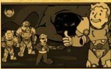

Este nuevo parche llega a Fallout 76
para ayudar a organizar mejor
muestro inventario entre otras cosas.
A continuación las novedades mas
importantes:
Aumento del alijo, de 800 a 1200
Nuevas pestañas en el Pip-Boy,
ahora armaduras y atuendos están
por separado y comida y bebida
están separadas de ayuda, lo cual
agilizará mucho la búsqueda de
nuestros objetos. También se
incorpora la pestaña “nuevo” donde
encontraremos los últimos ítems
recogidos en la sesión actual
ordenados en el orden en el que se
recogen
Nueva función “peso apilado” nos
muestra la el peso total de un ítem
que tengamos en cantidad (Tip:
atentos con los ítems de ayuda y
comida y bebida, que suelen ser los
que mas se acumulan sin darse
cuenta!).
También encontraremos mejoras en la interfaz de la vista en mapa de las maquinas vendedoras de jugadores. Ahora aparecen diferenciadas amas y armaduras por cantidad de estrellas legendarias, lo cual sin duda mos ahorrará muchos viajes rápidos.

Operaciones Diarias
A partir de esta actualización al
completar una operación diaria
alcanzando el rango de “Maestre” se
garantizará la obtención de al menos
un objeto de entre las recompensas
poco comunes.
Conocimiento Prohibido
La conocida misión secundaria ha
sido reactivada luego de haber
solucionado los problemas con los
datos técnicos. Y ahora no solo
pueden depositarse en Campamento
Aventura, también son recibidos en
Fuerte Atlas por la escriba Odessa
Valdez de la Hermandad del Acero, a
quien vemos en la siguiente imagen.
Consejo diario: no olvides llevar siempre un poco de Rad-X por si te topas con una tormenta radiactiva :-)
Novedades Tienda Atómica En la tienda atómica se ha añadido una opción para que muestre solo los ítems que no hemos comprado, para facilitar la navegación y mejorar la visualización.
Esta semana encontraremos
siguientes novedades:
Cámara de Habitaciones de Refugio
1500 átomos
Conjunto de sofas modulares
500 átomos
Servoarmadura de Ranger del Parque
1200 átomos
Además de muchas ofertas entre las
que destacan los letreros de
Quantum, Old Possum y Pickaxe,
Conjunto de bar elegante, Conjunto
de barra de Slocum's Joe, entre
otras.
Evento por tiempo limitado!
No olvides reclamar la skin gratuita del , “Rompecorazones” Ñ para la Llave Grifa y y participar del evento “Muero de Amor”, donde deberás completar desafios diarios y semanales que otorgarán recompensas como tarteras, kits de reparación, sobres de “perks”, y objetos de tiempo limitado (atuendo de RobCo, Bungaló rústico y Casco de pescador de langostas).